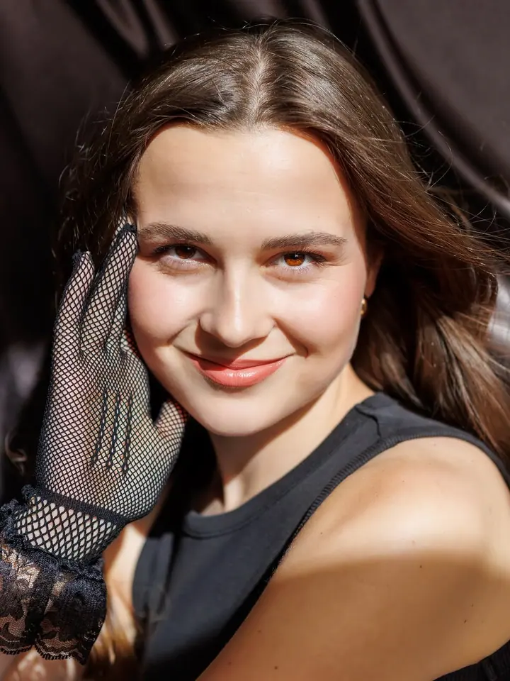
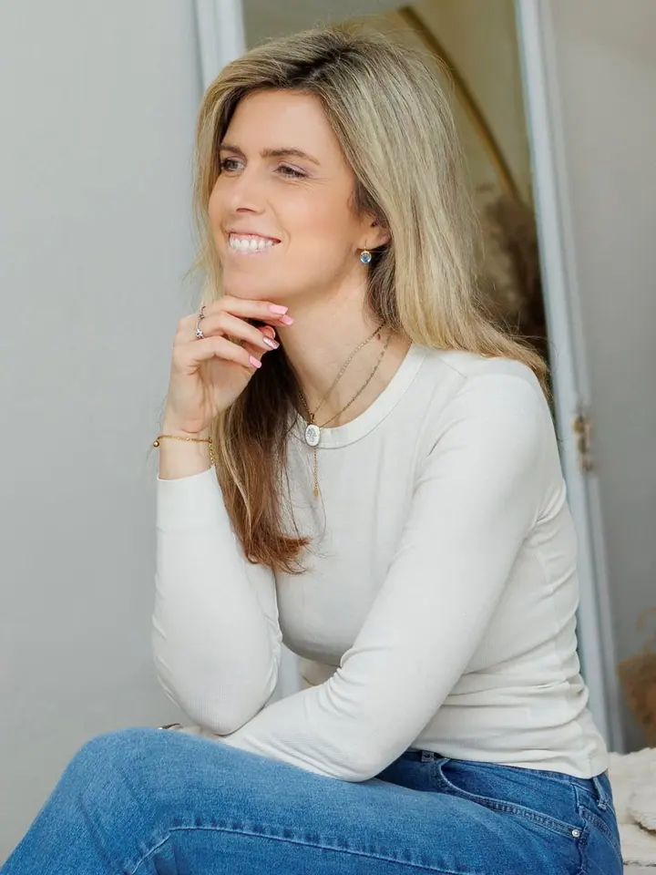
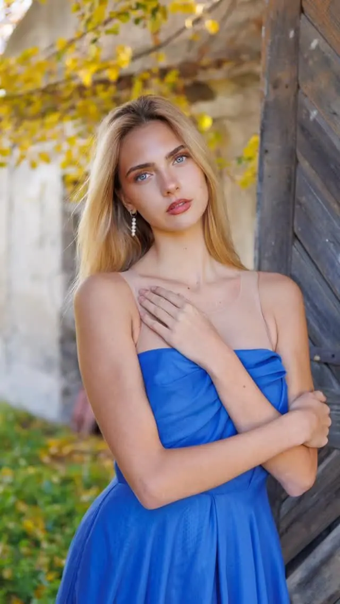
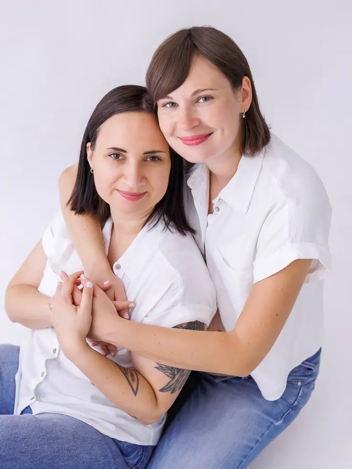
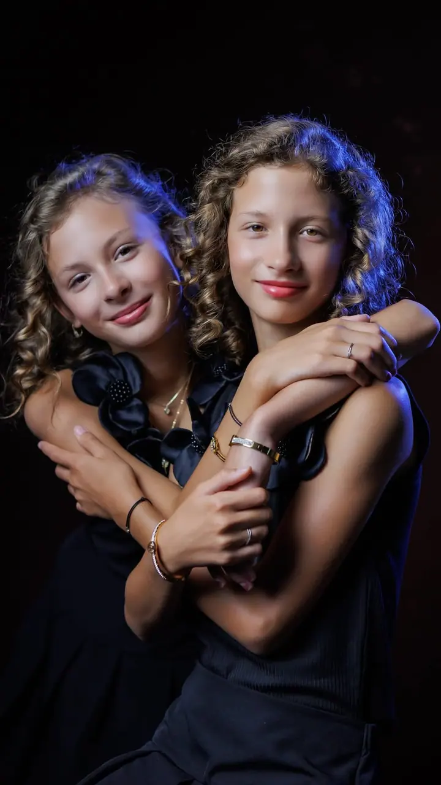
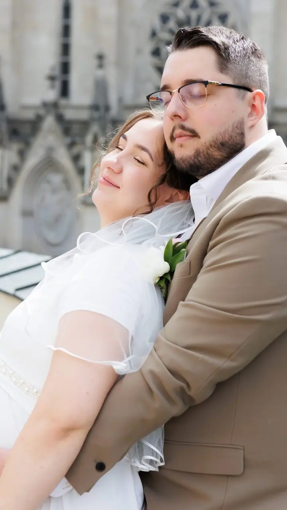

Portréty
Portréty žen i mužů v ateliéru nebo venku. Klasický portrét na plátno, glamour scéna nebo styl podle vašeho přání.





Jmenuji se Simona Píchová a jsem portrétní fotografka z Olomouce. Fotím portréty žen, mužů i celých rodin, nejčastěji ve svém útulném ateliéru na Pasteurově ulici. Ráda proměním vaši nervozitu v sebevědomí.
Více o mně
„Nejsi nefotogenická, jen ses ještě neviděla mýma očima.“
— Simona Píchová
Portréty žen i mužů v ateliéru nebo venku. Klasický portrét na plátno, glamour scéna nebo styl podle vašeho přání.
Společné fotky rodičů, dětí i sourozenců v klidu a soukromí mého ateliéru. Termín s dětmi vždy plánujeme tak, aby byly vyspané.
Jemné fotky bříška, které si budete chtít schovat na celý život. Klidně i s partnerem, kamarádkou nebo sestrou.
Něžné fotky miminka v náručí rodičů. Miminka retušuji co nejméně, aby zůstala taková, jaká opravdu jsou.
Spousta lidí mi před focením řekne, že jsou nefotogeničtí. Já to vidím jinak: jen jste se ještě neviděli mýma očima. Proto si na focení beru čas, povídáme si a nikam nespěcháme, dokud se před objektivem necítíte uvolněně.
Můj ateliér v Olomouci najdete ve 2. patře na ulici Pasteurova. Je útulný, vybavený profesionálním světlem, pozadími a rekvizitami a hlavně v něm máte naprosté soukromí. Podle sezóny tu chystám různé scény, třeba vánoční a valentýnské focení, glamour nebo klasický portrét na plátno.
Fotím ale i venku, v Olomouci a okolí. Ať už přijdete sami, s partnerem, s bříškem, s miminkem nebo s celou rodinou, ráda s vámi předem proberu, co si představujete, a poradím s místem i stylem.
Napište mi e-mailem nebo přes formulář, o jaké focení máte zájem a koho budeme fotit. Konzultace je zdarma a k ničemu vás nezavazuje.
Pošlete mi alespoň tři volné termíny a já vám potvrdím ten, který mi vyjde. Focení dětí plánujeme po jejich spánku.
Hodinu fotíme v mém ateliéru nebo venku. Pomůžu vám s pózováním, abyste se cítili přirozeně a sebevědomě.
Vybrané fotografie pečlivě upravím a zhruba do 3–4 týdnů vám je pošlu v plné kvalitě e-mailem přes Úschovnu.
Hodinové focení s 12 upravenými fotografiemi vychází na 3 000–4 000 Kč. Každá další retušovaná fotka je za 200 Kč. Ráda vám připravím i nabídku na míru.
Zhruba za 3–4 týdny od focení. V době dovolené, nemoci nebo v nejvytíženější sezóně to může trvat o něco déle.
Ano. Cestovné do 15 km od Olomouce je zdarma, dál účtuji 10 Kč za kilometr.
Určitě. Nabízím dárkový poukaz na 60minutové focení, který potěší maminku, kamarádku i partnera.
photo_simonapichova@seznam.cz
Olomouc · okolí Olomouce